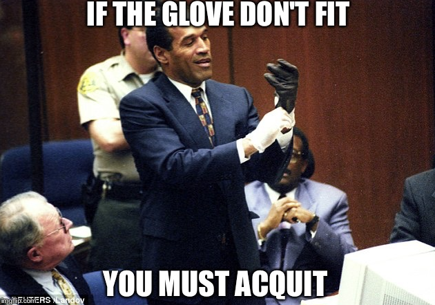

1.3 Criminal Law and Civil Law
Watch and Learn
Source: What is the difference between civil cases and criminal cases? by LegalYou. (Learn how to access the transcript.)
Law can be classified in a variety of ways. One of the most general classifications divides law into civil and criminal. A basic definition of civil law in the U.S. is the body of law governing non-criminal rights and obligations of persons to one another. As this definition indicates, civil law is between persons, not the government. Criminal law involves regulations enacted and enforced by government action, while civil law provides a remedy for persons who need to enforce private rights against other persons. Some examples of civil law are family law, wills and trusts, and contract law. If persons need to resolve a civil dispute, this is called civil litigation, or a civil lawsuit. When the type of civil litigation involves an injury, the injury action is called a tort.
Sidebar
In the law, “persons” can refer to natural persons (i.e., living human beings) and legal persons (i.e., a human or legal entity that is treated as as human for legal purposes).
Characteristics of Civil Litigation¶
It is important to distinguish between civil litigation and criminal prosecution. Civil and criminal cases share the same courts, but they have different goals, purposes, and results. Sometimes, one set of facts leads to both a criminal prosecution and a civil lawsuit. (This does not violate double jeopardy(1) and is actually quite common.)
- The Double Jeopardy Clause in the Fifth Amendment to the U.S. Constitution prohibits anyone from being prosecuted twice for substantially the same crime. The relevant part of the Fifth Amendment states, “No person shall … be subject for the same offense to be twice put in jeopardy of life or limb … .”
Parties in Civil Litigation¶
In civil litigation, an injured party sues to receive a court-ordered remedy, such as money, property, or some sort of performance. Anyone who is injured—an individual, corporation, or other business entity—can sue civilly. In a civil litigation matter, the injured party that is suing is called the plaintiff. Generally, a plaintiff hires and pays for an attorney or represent themself. Hiring an attorney is one of the many costs of litigation and should be carefully contemplated before jumping into a lawsuit.
The alleged wrongdoer—the person or entity being sued—is called the defendant. While the term plaintiff is always associated with civil litigation, the wrongdoer is called a defendant in both civil litigation and a criminal prosecution, so this can be confusing. The defendant can be any person or thing that has caused harm, including an individual, corporation, or other business entity. Like with plaintiffs, a defendant in a civil litigation matter will typically hire and pay for an attorney to defend them. The right to a free attorney does not apply in civil litigation, so a defendant who cannot afford an attorney must represent themself.
Goal of Litigation¶
The primary purpose of civil litigation is to compensate—not punish—the plaintiff for any damages(1) that the defendant caused and to make the plaintiff whole (i.e., to put the plaintiff back in the position they were in before the damage occurred.) Generally, if the plaintiff proves that the defendant act intentionally or negligently(2) caused the plaintiff’s alleged damages, the defendant becomes liable (i.e., legally obligated to do or not to do something by order of a court).
- i.e., harm in the form of physical injury, mental/emotional injury, property damage, or financial losses.
- In civil litigation, negligence is the failure to behave with the level of care that a reasonable person would have exercised under the same circumstances.
As opposed to intentional acts and negligence, there are two contexts in which a defendant may also be liable without establishing that the defendant violated a duty: (1) strict liability torts and (2) vicarious liability.
Strict liability torts do not require fault because they do not include an intent component. Strict liability and other intent issues are discussed in detail in Chapter 4.
Example of Strict Liability
In Wisconsin, “the owner of a dog is liable for the full amount of damages caused by the dog injuring or causing injury to a person, domestic animal or property.”(1) If the owner knew or was notified that the dog previously injured or cause injury to someone, the owner is liable for double the amount of damages caused.(2)
Based on strict liability, the owner is liable merely because their dog caused an injury to someone; it is irrelevant whether the owner commanded the dog to injure someone, whether the owner failed to carefully restrain the dog, or whether the owner took every possible precaution. In other words, the plaintiff does not need to prove that the owner did anything wrong.
Another situation where the defendant may be liable without fault is if the defendant did not actually commit any act but is associated with the acting defendant through a special relationship. The policy of holding a separate entity or individual liable for the defendant’s action is called vicarious liability. An example of vicarious liability is employer-employee liability, also referred to as respondeat superior. If an employee injures a someone in the scope of the employee’s employment, the employer may be liable for the plaintiff’s injuries, whether or not the employer is at fault. Clearly, between the employer and the employee, the employer generally has the better ability to pay.
Example of Respondeat Superior
Chris begins the first day at his new job as a cashier at a local restaurant. Chris attempts to multitask and pours hot coffee while simultaneously handing out change. He loses his grip on the coffee pot and spills steaming-hot coffee on his customer Bart’s hand. In this case, if Bart suffers and injury, he can sue both the restaurant and Chris. Although the restaurant did not do anything wrong, it may be liable for Bart’s injuries under the theory of respondeat superior.
The Harm Requirement: Damages¶
Since the goal of civil litigation is to compensate the plaintiff for injuries, the plaintiff must be a bona fide victim who can prove the defendant’s behavior caused them harm, generally referred to as damages.
If there is no evidence of harm, the plaintiff has no basis for the lawsuit because there is nothing for which to compensate the plaintiff.
Example of No Harm
Chris is driving and rear-ends Bart’s car without causing damage to the vehicle (property damage) or physical injury to Bart. Even if Chris is at fault for the accident, Bart will not have a basis for a lawsuit no harm for which to compensate him.
In civil litigation plaintiffs due defendants predominantly for money.(1) Any money the court awards to the plaintiff based on the lawsuit’s allegations is called damages.
Sidebar
In civil litigation, “damages,” “harm,” “injury,” and “loss” are used largely interchangeably.
Several kinds of damages may be appropriate. For instance, the plaintiff can sue for compensatory damages, which compensate for injuries, costs, which repay certain lawsuit expenses. In some cases, the court may award punitive damages, which are not designed to compensate the plaintiff but instead intended punish the defendant for causing the injury by conduct that was “wanton, willful, or [in] reckless disregard for the plaintiff’s rights.”(2)
- Sometimes, plaintiffs sue defendants for a remedy other than money, such as an injunction or a court order forcing the defendant to fulfill duties under a contract.
- See Wisconsin Civil Jury Instruction 1707A.
Case in Point
During the construction of Miller Park (currently American Family Field) in Milwaukee, Wisconsin, three ironworkers died when a large crane, known and “Big Blue,” collapsed. See this video:
Source: 20 years ago: Big Blue crane collapses at Miller Park, killing 3 ironworkers by WISN News. (Learn how to access the transcript.)
The three workers were in a basket held by a crane over 40 stories high, preparing to bolt down a section of Miller Park’s retractable roof that was being hoisted into place; it weighed approximately 913,000 pounds with dimensions of 120 feet wide and 76 feet high. During high winds, the crane collapsed, and the workers fell to their death. At the time of the crash, winds were reported to be between 21 and 29 mph. Engineers also testified that throughout the afternoon, winds and gusts reached up to 35 mph.
Mitsubishi Heavy Industries America, Inc. (MHIA), which was in control of the construction, leased the crane, and it was responsible for performing load and wind-speed calculations. The site manager testified that he knew the maximum safe wind speed for the crane was 20 mph, regardless of the load (weight and size of the object being hoisted). There was evidence indicating that no load/wind-speed calculations were performed when executing the lift.
At the conclusion of trial, the jury awarded $5.25 million in compensatory damages and $94 million in punitive damages. On appeal, the Wisconsin Supreme Court held the trial court properly permitted the jury to consider whether to award punitive damages. As the court stated, there was evidence that “MHIA was aware that its conduct was substantially certain to result in the plaintiffs’ rights being disregarded,” specifically, “that MHIA’s course of conduct was deliberate in failing to follow the load [calculation] chart, in failing to adhere to common practices used with other lifts at other sites, and in failing to calculate the maximum safe wind speed for a crane 45 stories high that was lifting, on a windy afternoon, a mass with a large surface area that weighed almost a million pounds.”(1)
- Wischer v. Mitsubishi Heavy Industries America, Inc., et al., 2005 WI 26, 694 N.W.2d 320 (Wis. 2005).
(Note: This case also presents another illustration of vicarious liability.)
Characteristics of a Criminal Prosecution¶
A criminal prosecution takes place after a defendant allegedly violates a federal or state criminal statute, or in some jurisdictions, after a defendant commits a common-law crime. Statutes and common-law crimes are discussed in Section 1.6.
Parties in a Criminal Prosecution¶
The government institutes the criminal prosecution, rather than an individual plaintiff. If the defendant commits a federal crime, the United States pursues the criminal prosecution. If the defendant commits a state crime, the state government, often called “The People” of the state, pursues the criminal prosecution. As in a civil lawsuit, the alleged wrongdoer is called the defendant and can be an individual, corporation, or other business entity.
The attorney who represents the government controls the criminal prosecution. In a federal criminal prosecution, this is the United States Attorney. In a state criminal prosecution, this is generally a state prosecutor or a district attorney. A state prosecutor works for the state but is typically an elected official who represents the county where the defendant allegedly committed the crime.
Goal of a Criminal Prosecution¶
Another substantial difference between civil litigation and criminal prosecution is the goal. Recall that the goal of civil litigation is to compensate the plaintiff for injuries. In contrast, the goal of a criminal prosecution is to punish the defendant.
One consequence of the goal of punishment in a criminal prosecution is that fault is almost always an element in any criminal proceeding. This is unlike civil litigation, where the ability to pay is a priority consideration. Clearly, it is unfair to punish a defendant who did nothing wrong. This makes criminal law justice oriented and very satisfying for most students.
Injury and a victim are not necessary components of a criminal prosecution because punishment is the objective, and there is no plaintiff. Thus behavior can be criminal even if it is essentially harmless. Society does not condone or pardon conduct simply because it fails to produce a tangible loss.
Example of “Victimless” and “Harmless” Crimes
Steven is angry because his friend Bob broke his skateboard. Steven gets his gun, which has a silencer on it, and puts it in the glove compartment of his car. He then begins driving to Bob’s house. While Steven is driving, he exceeds the speed limit on three different occasions. Steven arrives at Bob’s house and then he hides in the bushes by the mailbox and waits. After an hour, Bob opens the front door and walks to the mailbox. Bob gets his mail, turns around, and begins walking back to the house. Steven shoots at Bob three different times but misses, and the bullets end up landing in the dirt. Bob does not notice the shots because of the silencer.
In this example, Steven has committed several crimes:
- If Steven does not have a special permit to carry a concealed weapon, putting the gun in his glove compartment is probably a crime in most states.
- If Steven does not have a special permit to own a silencer for his gun, this is probably a crime in most states.
- If Steven does not put the gun in a locked container when he transports it, this is probably a crime in most states.
- Steven committed a crime each time he exceeded the speed limit.
- Each time Steven shot at Bob and missed, he probably committed the crime of attempted murder or assault with a deadly weapon in most states.
Notice that none of the crimes Steven committed caused any discernible harm. However, common sense dictates that Steven should be punished so he does not commit a criminal act in the future that may result in harm.
Applicability of the Constitution in a Criminal Prosecution¶
The defendant in a criminal prosecution can be represented by a private attorney or a free attorney paid for by the state or federal government if he or she is unable to afford attorney’s fees and facing incarceration.(1) Attorneys provided by the government are called public defenders.(2) This is a significant difference from a civil litigation matter, where both the plaintiff and the defendant must hire and pay for their own private attorneys. The court appoints a free attorney to represent the defendant in a criminal prosecution because the U.S. Constitution is in effect in any criminal proceeding. The Constitution provides for the assistance of counsel in the Sixth Amendment, so every criminal defendant facing incarceration has the right to legal representation, regardless of wealth.
- Alabama v. Shelton, 535 U.S. 654 (2002).
- 18 U.S.C. § 3006A.
The presence of the Constitution at every phase of a criminal prosecution changes the proceedings significantly from the civil lawsuit. The criminal defendant receives many constitutional protections, including the right to remain silent, the right to due process of law, the freedom from double jeopardy, and the right to a jury trial, among others.
Table 1.3.1 Comparison of Criminal Prosecution and Civil Litigation¶
| Feature | Civil Litigation | Criminal Prosecution |
|---|---|---|
| Who brings the case? | business or individual suffering harm (referred to as the plaintiff) | the government (e.g., District Attorney/prosecutor) |
| Attorneys | private | prosecution: US Attorney or state prosecutor; defense: private or public defender |
| Burden of Proof | preponderance of the evidence (i.e., the credible evidence presented is convincing enough to determine that the plaintiff’s claim is more likely than not to be true) | beyond a reasonable doubt (i.e., the credible evidence presented is so convincing that no doubt about the defendant’s guilt is rational) |
| Remedy | damages, injunction, specific performance | punishment (e.g. fine or imprisonment) |
| Purpose | provide compensation or private relief | protect society |
| Constitutional protections | no | yes |
Table 1.3.2 Comparison of Criminal and Civil Laws Related to Causing Another’s Death¶
| Criminal | Civil |
|---|---|
| Wis. Stat. § 940.01(a): First-degree intentional homicide. [W]hoever causes the death of another human being with intent to kill that person or another is guilty of a Class A felony. [For a Class A felony, life imprisonment.] | Wis. Stat. § 895.03: Recovery for death by wrongful act. Whenever the death of a person shall be caused by a wrongful act, neglect or default and the act, neglect or default is such as would, if death had not ensued, have entitled the party injured to maintain an action and recover damages in respect thereof, then and in every such case the person who would have been liable, if death had not ensued, shall be liable to an action for damages notwithstanding the death of the person injured; provided, that such action shall be brought for a death caused in this state. |
| Wis. Stat. § 895.04(4): Plaintiff in wrongful death action. Judgment for damages for pecuniary injury from wrongful death may be awarded to any person entitled to bring a wrongful death action. Additional damages not to exceed $500,000 per occurrence in the case of a deceased minor, or $350,000 per occurrence in the case of a deceased adult, for loss of society and companionship may be awarded to the spouse, children or parents of the deceased, or to the siblings of the deceased, if the siblings were minors at the time of the death. |
LAW AND ETHICS: THE O. J. SIMPSON CASE¶
Two Different Trials, Two Different Results¶
O.J. Simpson was prosecuted criminally and sued civilly for the murder and wrongful death of victims Ron Goldman and his ex-wife, Nicole Brown Simpson. In the criminal prosecution, which came first, the U.S. Constitution provided O. J. Simpson with the right to a fair trial (due process) and the right to remain silent (privilege against self-incrimination). Thus the burden of proof was beyond a reasonable doubt, and he did not have to testify. He was found not guilty by the jury.(1)
- Linder, D. O. (n.d.) O.J. Simpson trial. Famous Trials.
In the subsequent civil lawsuit, the burden of proof was a preponderance of the evidence (in essence, 51–49 percent), and Simpson was forced to testify. He Simpson was found liable in the civil lawsuit. The jury awarded $8.5 million in compensatory damages to Fred Goldman (Ron Goldman’s father) and his ex-wife Sharon Rufo. A few days later, the jury awarded punitive damages of $25 million to be shared between Nicole Brown Simpson’s children and Fred Goldman.(1)
- Ayres, 1997, Jury decides Simpson must pay $25 million in punitive award. The New York Times.
Exercises: Law & Ethics¶
Exercise 1.3.1¶
Q: Do you think it is ethical to give criminal defendants more legal protection than civil defendants? Why or why not? Compare your answer to the discussion below.
Exercise 1.3.2¶
Q: Considering the rights of criminal defendants granted by the Bill of Rights, what is the likely reason the criminal trial of O.J. Simpson occurred before the civil trial?
Info
Sidebar After the O.J. Simpson criminal trial, this statement quickly became part of the zeitgeist: “If the glove don’t fit, you must acquit.”

Figure 1.3.1 Title asdfasdf
This statement was credited to Simpson’s attorney, Johnny Cochran, and it continues to be a meme decades later.
Johnny Cochran Video¶
Johnny Cochran: If the Gloves Don’t Fit… This video presents defense attorney Johnny Cochran’s closing argument in the O.J. Simpson criminal prosecution:
Key Takeaways
A crime is an an act or failure to act that a law defines as deserving of punishment or penalty. In general, the criminal law must be enacted before the crime is committed.
Key Takeaways¶
- Civil law regulates the private rights of individuals. Criminal law regulates individuals’ conduct to protect the public.
- Civil litigation is a legal action between individuals to resolve a civil dispute.
- Criminal prosecution is when the government prosecutes a defendant to punish illegal conduct.
Exercise 1.3.3¶
Q: Read Campbell v. State, 5 S.W.3d 693 (Tex. Crim. App. 1999). Why did the defendant in this case claim that the restitution award was too high? Did the Texas Court of Criminal Appeals agree with the defendant’s claim?
Answer the following questions. Check your answers using the answer key at the end of the chapter. 1. Jerry, a law enforcement officer, pulls Juanita over for speeding. When Jerry begins writing Juanita’s traffic ticket, she starts to berate him and accuse him of racial profiling. Jerry surreptitiously reaches into his pocket and activates a tape recorder. Juanita later calls the highway patrol where Jerry works and files a false complaint against Jerry. Jerry sues Juanita for $500 in small claims court for filing the false report. He uses the tape recording as evidence. Is this a civil litigation matter or a criminal prosecution?
This is a civil litigation matter. Although the incident involves Jerry, who is a law enforcement officer, and it takes place while Jerry is writing a traffic ticket, Jerry is suing Juanita for damages. Thus this is civil litigation, not criminal prosecution. If Juanita is prosecuted for the crime of filing a false police report, then this would be a criminal prosecution.
- Read Johnson v. Pearce, 148 N.C.App. 199 (2001). In this case, the plaintiff sued the defendant for criminal conversation. Is this a civil litigation matter or a criminal prosecution? The case is available at this link: http://scholar.google.com/scholarcase?case=10159013992593966605&q= Johnson+v.+Pearce&hl=en&assdt=2,5.
The Johnson case reviews an award of damages and is thus a civil litigation matter. Criminal conversation is the tort of adultery in North Carolina.
Supplementary Attributions
Except where otherwise noted, this page’s content is adapted from:
- civil law. Wex Legal Dictionary and Encyclopedia by Cornell University’s Legal Information Institute is licensed CC BY-NC-SA 2.5.
- defendant. Wex Legal Dictionary and Encyclopedia by Cornell University’s Legal Information Institute is licensed CC BY-NC-SA 2.5.
- legal person. Wex Legal Dictionary and Encyclopedia by Cornell University’s Legal Information Institute is licensed CC BY-NC-SA 2.5.
- natural person. Wex Legal Dictionary and Encyclopedia by Cornell University’s Legal Information Institute is licensed CC BY-NC-SA 2.5.
- plaintiff. Wex Legal Dictionary and Encyclopedia by Cornell University’s Legal Information Institute is licensed CC BY-NC-SA 2.5.